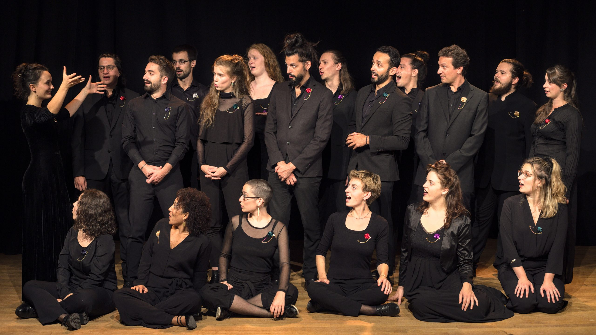
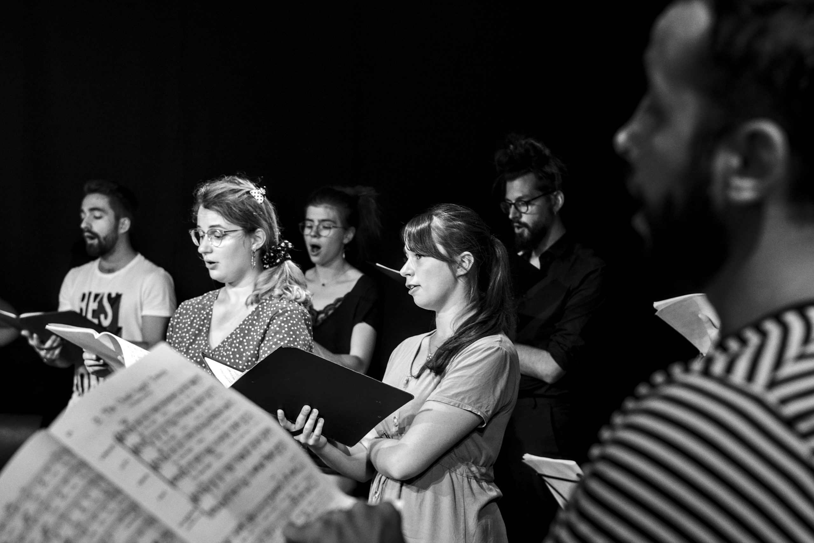

Syllepse

Syllepse est un jeune ensemble vocal lyonnais constitué de 30 chanteurs aguerris, regroupés autour de la cheffe Ophélia Besson. Chœur mixte a cappella, il fait le pari d’associer musiques anciennes et contemporaines à destination d’un large public. Réuni pour la première fois en 2020 pour un programme Shakespearien, le chœur Syllepse fait résonner la musique d’antan et celle d’aujourd’hui. Le plaisir, la beauté alliés à l’exigence sont les lignes de force de l’ensemble vocal Syllepse. L’ensemble vocal est géré par une association d’intérêt général de promotion culturelle du même nom (voir l’onglet « nous soutenir »)
Signification
Syllepse, qui nous vient du grec ancien : σύλληψις, qui signifie littéralement : « action de prendre ensemble, de comprendre, d’embrasser ».
-
-
Prendre ensemble
Un chœur c’est avant tout une multitude d’individus qui s’unissent et qui s’emparent d’un projet artistique. C’est trouver une unité dans la diversité.
-
Comprendre
Sans cesse chercher à comprendre. Comprendre un son, comprendre une résonance, un phénomène acoustique. Comprendre ce qui relie deux époques opposées dans l’histoire de la musique. Chercher à comprendre ce qui nous anime, ce qui nous unit. Comprendre ce langage universel qu’est la musique.
-
Embrasser
Embrasser un répertoire, un même désir, une exigence commune, pour s’élever ensemble. Adopter et choisir une musique pour la partager avec le public.
- 